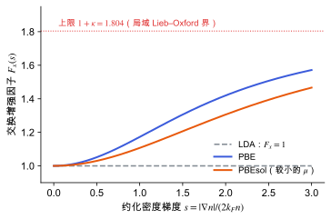

位置、路径与目录
PBE 泛函与广义梯度近似
概念节点领域：电子结构理论v0.2 · 2026-11-10
草稿已有正文，但来源和推导还没有核查完，不能当作定论。
PBE 交换增强因子的形式、参数从哪里来、典型误差倾向，以及为什么分子晶体要加色散修正。
最简单的交换关联近似是局域密度近似 (LDA)：每一点的交换关联能密度取“同样密度的均匀电子气”的值。真实体系的密度不均匀，所以广义梯度近似 (GGA) 再加入密度梯度的信息。
PBE 是最常用的 GGA。它的设计思路是：不拟合实验数据，而是让泛函满足一组已知的精确条件（均匀电子气极限、慢变密度的线性响应、Lieb–Oxford 下界等），参数由这些条件确定 [PBE 1996]。
在交换部分，PBE 写成“LDA 交换 × 增强因子 F_x(s)”。s 是约化梯度，衡量密度在局部变化得有多快。

交换增强因子随约化梯度的变化：LDA 恒为 1；PBE 在小 s 处按 μs² 增长，大 s 处趋于 1+κ；PBEsol 的 μ 更小，增长更慢。
| 符号 | 是什么 | 图里对应 |
|---|
| s | 约化密度梯度 | 横轴 |
| F_x | 交换增强因子 | 纵轴 |
| LDA | F_x = 1 | 灰色水平线 |
| \kappa | 大梯度极限 F_x \to 1+\kappa 的参数 | 上方虚线 1.804 |
| \mu | 小梯度时 F_x \approx 1 + \mu s^{2} 的系数 | 蓝线（PBE）与橙线（PBEsol）起始弯曲程度的差别 |
关联部分写成 LDA 关联加一个梯度修正项 H，同样由精确条件确定，这里不展开 [PBE 1996]。
- PBE-D3：β-甘氨酸是氢键加范德华堆积的分子晶体，纯 PBE 的层间结合不足。研究线里用 PBE 加 D3 色散修正（见 色散校正），结构和弹性才合理。
- 压电系数对晶胞敏感：泛函和色散决定平衡晶胞，晶胞又影响 d_{ij}。比较实验时要分清“在实验晶胞上算”还是“在优化晶胞上算”（见 压电张量）。
- VASP 设置：
GGA = PE 选 PBE，GGA = PS 选 PBEsol；POTCAR 是用 PBE 生成的。 - 带隙不必当真：压电与介电只需要绝缘的基态，PBE 低估的带隙一般不影响定性结论，但会影响电子介电常数的大小。
- D3 参数和泛函不配套：D3 的阻尼参数是针对每个泛函拟合的，换泛函必须换参数。
- 用 PBEsol 加 D3 而不检查参数是否存在：并非每种泛函和阻尼形式组合都有现成参数。
- 把 PBE 的“不拟合实验”理解成“没有误差”：满足精确条件不等于对每种性质都准。
相关条目交换关联泛函（候选，还没有正文）
参考资料
论文PBE 1996
J. P. Perdew, K. Burke, M. Ernzerhof, Generalized Gradient Approximation Made Simple, Phys. Rev. Lett. 77, 3865 (1996)
位置：交换相关能的函数形式与所满足的约束
尚未实际查阅，目前只是拟查阅书目
论文PBEsol 2008
J. P. Perdew et al., Restoring the density-gradient expansion for exchange in solids and surfaces, Phys. Rev. Lett. 100, 136406 (2008)
位置：为固体恢复梯度展开系数 μ；与 PBE 的对比
尚未实际查阅，目前只是拟查阅书目
论文Burke 2012
K. Burke, Perspective on density functional theory, J. Chem. Phys. 136, 150901 (2012)
位置：DFT 的概念框架、近似泛函的地位与常见误解
尚未实际查阅，目前只是拟查阅书目
论文雷达里的相关论文
按关键词匹配，最近的在前；点开在雷达里阅读。
关联与核验
核验与修订
暂无核验记录。
修订记录
- v0.22026-11-10初稿正文：LDA 到 GGA、约化梯度、PBE 交换增强因子与参数、PBEsol、误差倾向、缺少色散；配图 1 张
发现问题
在 GitHub 上公开提交纠错，会附上节点编号和版本，不含你的笔记。
提交纠错